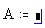

Defining a Variable |
Often you need to define a value as a variable to use in subsequent calculations. In this tutorial you can practice defining and viewing single-value and range variables.
| Discussion and Example |
Before you can evaluate an expression involving a variable rather than a constant, you must define the variable. To do so:
Type the variable name.
Type [:] to see the definition symbol, :=, and a placeholder.

Type a number, an expression, or a string in the placeholder.
A := 2 + 6
If you type an expression in the placeholder, make sure any variables or functions you use in that expression are not undefined variables marked in red.
Once you have defined a variable, you can compute with it anywhere below and to the right of the equation that defines it. You can also redefine the variable and the new definition will be used in following equations.
| Defining a Variable and Evaluating an Expression in a Single Line |
You can define a variable by the result of an evaluation in a single line. This enables you to see the result and define the variable in the same line. For example:
c:= sin(2) = 0.909